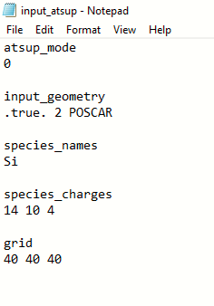

Atomic Superposition Software (ATSUP)
ATSUP is a software that runs in Linux, and it is used to calculate the positron annihilation lifetime in different materials.
Requirements for ATSUP
Linux: A computer needs to have a Linux operative system. Macs already use linux, but windows computers require to install a linux subsystem. The reason for this is that the software only runs in linux.
Input Files: ATSUP runs and give an output file once it has the necessary input files. These input files are two, one that tells about the geometry of the atoms, and the other tells about the parameters for the calculation.
Physics: In order to make the input files, and understand the output files it is necessary to know some of the basics of solid state physics and atomic physics.
Here there is an example of running ATSUP
Input File
atsup mode: 0 tells that the software is running in atomic superposition.
input geometry: .true. means that is importing a file of the geometry of the sample, the name of that file is POSCAR.
species_names: Si is importing the element with the symbol of Si ,which is silicon.
species charges: tells about the electrons in silicon , the inner electrons, and the valence electrons respectively.
grid: tells about the precision of the calculation, in this case it is a 40x40x40 grid. The bigger the grid, the more precise is the calculation, but it requires more time to calculate.
Notice that the titles are comments and no commands, for example "grid" does nothing, but it is helpful to know what each of these numbers are.
POSCAR File (Geometry)

In this file are the details of how are aranged the atoms in the sample.
Primitive cell of Si: the are two ways to describe a cell, one is the primitive which has the least amount of atoms, and the other is the standar, which has the standar form of describing a cell (usually easier to understand).
The 5.43 represent the distance between atoms in amnstrong.
the three numbers represent the vectors that describe the position of the atoms in the cell.
Si: represent the element, in this case silicon
2: The number of atoms in the calculation. Remember that each verticie has a fraction of an atom.
Direct & numbers: The type of coordinate, in this case in respect to the cell. The numbers represent the coordinates of each atom.
Notes: Although in this example it was used only one type of atom, in the calculations it is possible to add more types. Also, there were not deffects in this calculation.